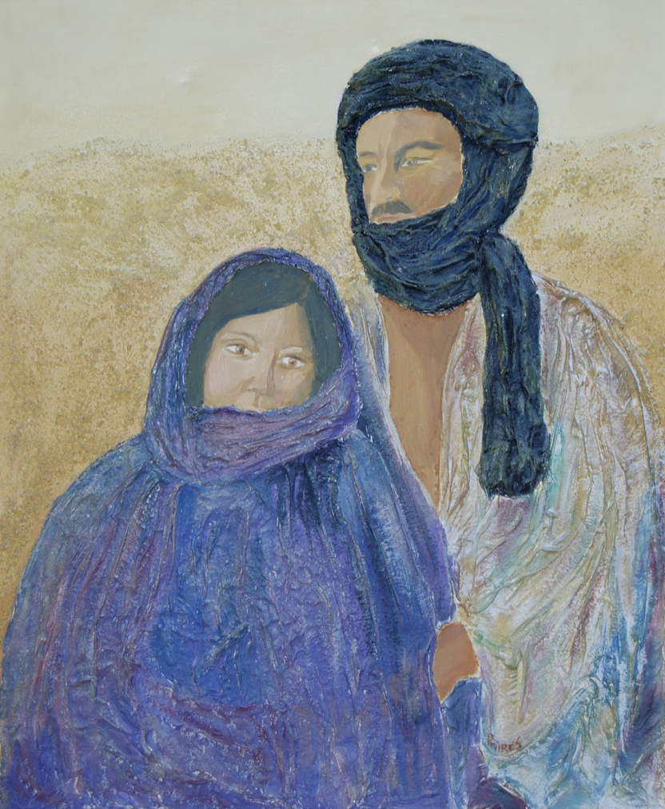

Ficha Técnica Technical Sheet Scheda Tecnica Техническая карта 技术参数 ورقة البيانات التقنية Technisches Datenblatt Fiche technique テクニカルデータ Ficha Técnica
- Técnica: Técnica mixta incluyendo acrílico, tela de escayola y polvo de mármol. Technique: Mixed media including acrylic, plaster cloth, and marble dust. Tecnica: Tecnica mista che include acrilico, stoffa in gesso e polvere di marmo. Техника: Смешанная техника (акрил, гипсовая ткань и мраморная пыль). 技法：混合材料，包括丙烯、石膏布和大理石粉。 التقنية: تقنية مختلطة تشمل الأكريليك وقماش الجص ومسحوق الرخام. Technik: Mischtechnik (Acryl, Gipsgewebe und Marmorstaub). Technique : Techniques mixtes (acrylique, toile de plâtre et poudre de marbre). 技法：アクリル、石膏布、大理石の粉末を含むミクストメディア。 Técnica: Técnica mista incluindo acrílico, tela de gesso e pó de mármore.
- Tamaño: 100x80 cm Size: 100x80 cm Dimensioni: 100x80 cm Размер: 100x80 см 尺寸：100x80 厘米 الحجم: 100x80 سم Größe: 100x80 cm Taille : 100x80 cm サイズ：100x80 cm Tamanho: 100x80 cm
- Lugar de Creación: Facultad de Bellas Artes en Madrid Creation Place: Fine Arts School of Madrid Luogo di Creazione: Accademia di Belle Arti di Madrid Место создания: Факультет изящных искусств в Мадриде 创作地点：马德里美术学院 مكان الإنشاء: كلية الفنون الجميلة في مدريد Entstehungsort: Fakultät für Schöne Künste in Madrid Lieu de création : Faculté des Beaux-Arts de Madrid 創作場所：マドリード美術学部 Lugar de Criação: Faculdade de Belas Artes de Madrid
- Ubicación Actual: Colección Privada. No disponible en mercado, pero se valoran ofertas superiores a 100.000 € por quienes honren su significado artístico. Current Location: Private Collection. Not for sale on open market, but serious offers over €100,000 from collectors honoring its meaning are valued. Ubicazione Attuale: Collezione privata. Non in vendita, ma si valutano offerte superiori a 100.000 € da parte di chi ne onora il significato. Текущее положение: Частная коллекция. Не продается на открытом рынке, но рассматриваются предложения свыше 100 000 € от ценителей её смысла. 当前位置：私人收藏。不在公开市场出售，但会慎重考虑珍视其艺术意义并出价100,000欧元以上的藏家。 الموقع الحالي: مجموعة خاصة. لا تعرض للبيع ولكن ستؤخذ في الاعتبار عروض تزيد عن 100,000 يورو من قبل من يقدّرون معناها الفني. Aktueller Standort: Privatsammlung. Nicht verkäuflich, aber Angebote über 100.000 € von Sammlern, die ihre künstlerische Bedeutung ehren, werden erwogen. Emplacement actuel : Collection Privée. Non disponible sur le marché, mais les offres supérieures à 100 000 € émanant d'amateurs honorant sa signification sont étudiées. 現在の場所：プライベートコレクション。一般市場では非売品ですが、その芸術的意義を深く理解される方からの10万ユーロ以上のオファーは検討します。 Localização Atual: Coleção Privada. Indisponível no mercado, contudo valorizam-se ofertas superiores a 100.000 € procedentes daqueles que honrarem a sua essência.
Análisis Crítico Critical Analysis Analisi Critica Критический анализ 批判性分析 التحليل النقدي Kritische Analyse Analyse Critique 批評的分析 Análise Crítica
"Revelación", la obra de Paz Arés Osset, se sumerge en el concepto de desvelamiento. La sabiduría, en muchas ocasiones, se encuentra oculta detrás de velos que nos impone la vida o la sociedad. Tal como un diamante está envuelto en capas que lo ocultan, así está nuestra comprensión más profunda, esperando ser descubierta detrás de barreras que nosotros mismos, o el mundo alrededor, hemos construido.
Estos velos pueden ser el miedo, el prejuicio o el dolor que nos impide ver la verdadera naturaleza del amor y la claridad que reside en nuestro interior. Para llegar a la iluminación, para permitir que nuestra esencia brille intensamente, es necesario desprendernos de estas capas, como quien se despoja de ropajes innecesarios. Este acto de 'desnudarnos', metafóricamente, es un desafío a las expectativas y las normas que dicta la sociedad, revelando la libertad de ser genuinamente nosotros mismos.
En la pintura, la figura de una pareja envuelta en gruesos velos azules es una representación visual de la sabiduría que todos llevamos dentro, a menudo escondida. El autorretrato de la artista y la figura acompañante son metáforas de las almas que buscan brillar, de los espíritus que anhelan deshacerse de las capas que los apagan. La tela de escayola y el polvo de mármol añaden una textura que no solo se ve, sino que se siente, invitando al espectador a contemplar la importancia de dejar caer los velos que nos cubren para abrazar la luminosidad de la verdad y el amor en su forma más pura.
La obra "Revelación" de Paz Arés Osset es una exploración conmovedora de la identidad y la espiritualidad, enraizada en las experiencias vividas de la artista y el paisaje cultural de su tierra natal, Sidi Ifni en África Occidental español. Arés Osset conjura en su lienzo no solo una imagen, sino una atmósfera cargada con la textura del desierto y la intimidad de un autorretrato.
La técnica mixta utilizada por la artista en "Revelación" no es casual; es un eco de las capas de significado que se desean transmitir. La incorporación de tela de escayola y polvo de mármol en los vestidos no solo aporta una dimensión táctil al trabajo, sino que simboliza la fusión de la geografía y el ser, en donde el entorno desértico se convierte en un actor participante en la vida de sus sujetos. El material texturizado habla de la dureza del siroco y del abrasador sol africano, elementos naturales que los nativos contrarrestan con su vestimenta, un gesto de resistencia y adaptación que Arés Osset captura con maestría.
El autorretrato, hábilmente velado, no es solo un juego visual de ocultamiento y revelación, sino también un comentario sobre la sabiduría inherente que se encuentra a menudo oscurecida por las circunstancias de la vida o por los velos que la sociedad nos impone. El título "Revelación" se convierte en una metáfora extendida para este acto de desvelamiento, una búsqueda de la verdad y la esencia que se encuentran más allá de la superficie.
La pareja en la obra, estática y en movimiento, representa las dualidades de la existencia: lo visible y lo invisible, lo conocido y lo desconocido, la realidad y la potencialidad. El contrapunto de esta obra con su pieza hermana, en la que los velos son arrancados por el viento y los sujetos se enfrentan a la desnudez del ser, refleja una danza entre lo que somos y lo que podemos ser, iluminando la travesía humana hacia el autoconocimiento y la libertad.
"Revelación" es una obra que trasciende lo personal para tocar lo universal. Paz Arés Osset ha creado no solo un espejo de su propia experiencia, sino también un lienzo en el que los espectadores pueden verse reflejados, contemplar y, tal vez, descubrir sus propias revelaciones interiores. En su abstracción y realismo, su textura y su simbolismo, la obra es un diálogo constante con el espectador, un diálogo que se enriquece con cada nueva mirada.
El cuadro capta la esencia humana a través de la simplificación y abstracción de formas. La técnica utilizada crea un efecto tridimensional palpable. Los colores son particularmente notables; el azul profundo y los tonos terrosos no solo sugieren un contexto cultural específico, sino que también establecen un contraste emocional. El azul, frío y calmante, envuelve a la figura femenina, sugiriendo quizás introspección o serenidad, mientras que los marrones y ocres que dominan el fondo y adornan la vestimenta de la figura masculina, podrían ser una representación de lo mundano o terrenal.
La composición divide deliberadamente el espacio, dando prioridad a las figuras sobre un fondo apenas definido que podría interpretarse como un paisaje desértico, evocando sensaciones de vastedad y desolación. Las miradas de las figuras se dirigen fuera del lienzo, lo que puede indicar una reflexión o preocupación hacia algo más allá de la escena. Esta dirección de la mirada también sirve para involucrar al espectador en un diálogo silencioso con las figuras.
La expresividad se logra a pesar de la abstracción en los rasgos faciales. Hay un equilibrio delicado entre la representación y la estilización que presta a las figuras una calidad etérea. Aunque sus rostros son esquemáticos, hay una humanidad palpable en su presentación. Esto se complementa con el uso de vestimenta tradicional, lo que aporta una capa de autenticidad y contexto cultural.
"Revelation", the work of Paz Arés Osset, delves into the concept of revelation. Wisdom, on many occasions, is hidden behind veils that life or society imposes on us. Just as a diamond is wrapped in layers that hide it, so is our deepest understanding, waiting to be discovered behind barriers that we ourselves, or the world around us, have built.
These veils can be fear, prejudice or pain that prevents us from seeing the true nature of love and the clarity that resides within us. To reach enlightenment, to allow our essence to shine brightly, it is necessary to shed these layers, like someone shedding unnecessary clothing. This act of 'undressing' ourselves, metaphorically, is a challenge to the expectations and norms that society dictates, revealing the freedom to genuinely be ourselves.
In the painting, the figure of a couple wrapped in thick blue veils is a visual representation of the often hidden wisdom we all carry within us. The self-portrait of the artist and the accompanying figure are metaphors of the souls that seek to shine, of the spirits that long to get rid of the layers that dull them. The plaster fabric and marble dust add a texture that is not only seen, but felt, inviting the viewer to contemplate the importance of dropping the veils that cover us to embrace the luminosity of truth and love in their purest form.
Paz Arés Osset's "Revelation" is a moving exploration of identity and spirituality, rooted in the artist's lived experiences and the cultural landscape of her homeland, Sidi Ifni in Spanish West Africa. Arés Osset conjures on his canvas not only an image, but an atmosphere charged with the texture of the desert and the intimacy of a self-portrait.
The mixed technique used by the artist in "Revelation" is not coincidental; It is an echo of the layers of meaning that you wish to convey. The incorporation of plaster fabric and marble dust in the dresses not only adds a tactile dimension to the work, but also symbolizes the fusion of geography and being, where the desert environment becomes a participating actor in the lives of its subjects. The textured material speaks of the hardness of the sirocco and the scorching African sun, natural elements that the natives counteract with their clothing, a gesture of resistance and adaptation that Arés Osset masterfully captures.
The cleverly veiled self-portrait is not only a visual game of concealment and revelation, but also a commentary on the inherent wisdom that is often obscured by life's circumstances or by the veils that society imposes on us. The title "Revelation" becomes an extended metaphor for this act of unveiling, a search for the truth and essence that lies beyond the surface.
The couple in the work, static and in motion, represents the dualities of existence: the visible and the invisible, the known and the unknown, reality and potentiality. The counterpoint of this work with its sister piece, in which the veils are torn by the wind and the subjects confront the nakedness of being, reflects a dance between what we are and what we can be, illuminating the human journey towards self-knowledge and freedom.
"Revelation" is a work that transcends the personal to touch the universal. Paz Arés Osset has created not only a mirror of her own experience, but also a canvas in which viewers can see themselves reflected, contemplate and, perhaps, discover their own inner revelations. In its abstraction and realism, its texture and its symbolism, the work is a constant dialogue with the viewer, a dialogue that is enriched with each new look.
The painting captures the human essence through the simplification and abstraction of forms. The technique used creates a palpable three-dimensional effect. The colors are particularly notable; Deep blue and earthy tones not only suggest a specific cultural context, but also establish an emotional contrast. The blue, cold and calming, surrounds the female figure, perhaps suggesting introspection or serenity, while the browns and ochers that dominate the background and adorn the clothing of the male figure, could be a representation of the mundane or earthly.
The composition deliberately divides the space, giving priority to the figures against a barely defined background that could be interpreted as a desert landscape, evoking sensations of vastness and desolation. The figures' gazes are directed away from the canvas, which may indicate a reflection or concern towards something beyond the scene. This direction of gaze also serves to engage the viewer in a silent dialogue with the figures.
Expressiveness is achieved despite the abstraction in facial features. There is a delicate balance between representation and stylization that lends the figures an ethereal quality. Although their faces are schematic, there is a palpable humanity in their presentation. This is complemented by the use of traditional clothing, which adds a layer of authenticity and cultural context.
"Revelation", l'opera di Paz Arés Osset, approfondisce il concetto di rivelazione. La saggezza, in molte occasioni, si nasconde dietro i veli che la vita o la società ci impone. Proprio come un diamante è avvolto da strati che lo nascondono, così lo è la nostra comprensione più profonda, in attesa di essere scoperta dietro le barriere che noi stessi, o il mondo intorno a noi, abbiamo costruito.
Questi veli possono essere paura, pregiudizio o dolore che ci impediscono di vedere la vera natura dell'amore e la chiarezza che risiede dentro di noi. Per raggiungere l'illuminazione, per permettere alla nostra essenza di risplendere luminosamente, è necessario liberarsi di questi strati, come qualcuno si libera degli indumenti non necessari. Questo atto di 'spogliarsi', metaforicamente, è una sfida alle aspettative e alle norme dettate dalla società, rivelando la libertà di essere veramente noi stessi.
Nel dipinto, la figura di una coppia avvolta in spessi veli blu è una rappresentazione visiva della saggezza, spesso nascosta, che tutti portiamo dentro di noi. L'autoritratto dell'artista e la figura che lo accompagna sono metafore delle anime che cercano di brillare, degli spiriti che desiderano liberarsi degli strati che li offuscano. Il tessuto di gesso e la polvere di marmo aggiungono una consistenza che non solo si vede, ma si sente, invitando lo spettatore a contemplare l'importanza di lasciar cadere i veli che ci coprono per abbracciare la luminosità della verità e dell'amore nella loro forma più pura.
"Revelation" di Paz Arés Osset è un'esplorazione commovente dell'identità e della spiritualità, radicata nelle esperienze vissute dell'artista e nel panorama culturale della sua terra natale, Sidi Ifni nell'Africa occidentale spagnola. Arés Osset evoca sulla sua tela non solo un'immagine, ma un'atmosfera carica della trama del deserto e dell'intimità di un autoritratto.
La tecnica mista utilizzata dall'artista in “Apocalisse” non è casuale; È un'eco degli strati di significato che desideri trasmettere. L'incorporazione di tessuto in gesso e polvere di marmo negli abiti non solo aggiunge una dimensione tattile all'opera, ma simboleggia anche la fusione tra geografia ed essere, dove l'ambiente desertico diventa attore partecipe nella vita dei suoi soggetti. La materia strutturata parla della durezza dello scirocco e del cocente sole africano, elementi naturali a cui gli indigeni contrastano con i loro abiti, un gesto di resistenza e adattamento che Arés Osset cattura magistralmente.
L'autoritratto abilmente velato non è solo un gioco visivo di occultamento e rivelazione, ma anche un commento sulla saggezza intrinseca che spesso è oscurata dalle circostanze della vita o dai veli che la società ci impone. Il titolo "Rivelazione" diventa una metafora estesa per questo atto di svelamento, una ricerca della verità e dell'essenza che si trova oltre la superficie.
La coppia nell'opera, statica e in movimento, rappresenta le dualità dell'esistenza: il visibile e l'invisibile, il conosciuto e l'ignoto, la realtà e la potenzialità. Il contrappunto di quest'opera con la sua opera gemella, in cui i veli sono strappati dal vento e i soggetti affrontano la nudità dell'essere, riflette una danza tra ciò che siamo e ciò che possiamo essere, illuminando il viaggio umano verso la conoscenza di sé e la libertà.
"Revelation" è un'opera che trascende il personale per toccare l'universale. Paz Arés Osset ha creato non solo uno specchio della propria esperienza, ma anche una tela in cui gli spettatori possono vedersi riflessi, contemplare e, forse, scoprire le proprie rivelazioni interiori. Nella sua astrazione e realismo, nella sua consistenza e nel suo simbolismo, l'opera è un dialogo costante con lo spettatore, un dialogo che si arricchisce ad ogni nuovo sguardo.
Il dipinto coglie l'essenza umana attraverso la semplificazione e l'astrazione delle forme. La tecnica utilizzata crea un palpabile effetto tridimensionale. I colori sono particolarmente notevoli; I toni del blu profondo e della terra non solo suggeriscono un contesto culturale specifico, ma stabiliscono anche un contrasto emotivo. Il blu, freddo e calmante, circonda la figura femminile, forse suggerendo introspezione o serenità, mentre i marroni e gli ocra che dominano lo sfondo e adornano l'abbigliamento della figura maschile, potrebbero essere una rappresentazione del mondano o terreno.
La composizione suddivide volutamente lo spazio, privilegiando le figure su uno sfondo appena definito che potrebbe essere interpretato come un paesaggio desertico, evocando sensazioni di vastità e desolazione. Gli sguardi delle figure sono distolti dalla tela, il che può indicare una riflessione o una preoccupazione verso qualcosa che va oltre la scena. Questa direzione dello sguardo serve anche a coinvolgere lo spettatore in un dialogo silenzioso con le figure.
L'espressività è raggiunta nonostante l'astrazione dei lineamenti del viso. C'è un delicato equilibrio tra rappresentazione e stilizzazione che conferisce alle figure una qualità eterea. Sebbene i loro volti siano schematici, c'è un'umanità palpabile nella loro presentazione. Ciò è completato dall’uso di abiti tradizionali, che aggiungono uno strato di autenticità e contesto culturale.
«Откровение», работа Паса Ареса Оссета, углубляется в концепцию откровения. Мудрость во многих случаях скрыта за завесой, которую навязывает нам жизнь или общество. Подобно тому, как алмаз обернут слоями, которые его скрывают, так и наше глубочайшее понимание ждет своего открытия за барьерами, которые мы сами или мир вокруг нас построили.
Этими завесами могут быть страх, предубеждение или боль, которые мешают нам увидеть истинную природу любви и ясность, которая находится внутри нас. Чтобы достичь просветления, чтобы позволить нашей сущности ярко сиять, необходимо сбросить эти слои, как кто-то сбрасывает ненужную одежду. Образно говоря, этот акт «раздевания» себя является вызовом ожиданиям и нормам, которые диктует общество, раскрывая свободу по-настоящему быть самими собой.
На картине фигура пары, закутанной в толстую голубую вуаль, является визуальным представлением часто скрытой мудрости, которую мы все несем внутри себя. Автопортрет художника и сопровождающая его фигура — это метафоры душ, стремящихся сиять, духов, жаждущих избавиться от притупляющих их слоев. Гипсовая ткань и мраморная пыль добавляют текстуру, которую не только можно увидеть, но и почувствовать, приглашая зрителя задуматься о том, как важно сбросить завесу, которая нас покрывает, и принять сияние истины и любви в их чистейшей форме.
«Откровение» Пас Ареса Оссета — это трогательное исследование идентичности и духовности, основанное на жизненном опыте художницы и культурном ландшафте ее родины, Сиди Ифни в испанской Западной Африке. Арес Осет создает на своем полотне не просто образ, а атмосферу, наполненную фактурой пустыни и интимностью автопортрета.
Смешанная техника, использованная художником в «Откровении», не случайна; Это отголосок смысловых слоев, которые вы хотите передать. Использование гипсовой ткани и мраморной пыли в платьях не только придает работе тактильное измерение, но и символизирует слияние географии и бытия, где окружающая среда пустыни становится действующим лицом в жизни ее героев. Фактурный материал говорит о твердости сирокко и палящем африканском солнце, природных стихиях, которым туземцы противодействуют своей одеждой, жесте сопротивления и адаптации, который мастерски улавливает Арес Оссет.
Искусно завуалированный автопортрет — это не только визуальная игра сокрытия и откровения, но и комментарий к внутренней мудрости, которая часто затемняется жизненными обстоятельствами или завесами, которые навязывает нам общество. Название «Откровение» становится расширенной метафорой этого акта раскрытия, поиска истины и сущности, лежащих за пределами поверхности.
Пара в работе, статичная и движущаяся, олицетворяет двойственность существования: видимое и невидимое, известное и неизвестное, реальность и потенциальность. Контрапункт этой работы с ее родственной пьесой, в которой завесы рвутся ветром и персонажи противостоят наготе бытия, отражает танец между тем, кем мы являемся, и тем, кем мы можем быть, освещая путь человека к самопознанию и свободе.
«Откровение» — это произведение, выходящее за рамки личного и касающееся универсального. Пас Арес Оссет создала не только зеркало собственного опыта, но и полотно, на котором зрители могут увидеть себя отраженными, созерцать и, возможно, открыть собственные внутренние откровения. По своей абстракции и реализму, фактуре и символике произведение представляет собой постоянный диалог со зрителем, диалог, который обогащается с каждым новым взглядом.
Картина улавливает человеческую сущность через упрощение и абстракцию форм. Используемая техника создает ощутимый трехмерный эффект. Цвета особенно примечательны; Глубокие синие и землистые тона не только предполагают особый культурный контекст, но и создают эмоциональный контраст. Синий, холодный и успокаивающий, окружает женскую фигуру, возможно, предполагая самоанализ или безмятежность, в то время как коричневые и охристые цвета, которые доминируют на фоне и украшают одежду мужской фигуры, могут быть символом мирского или земного.
Композиция намеренно разделяет пространство, отдавая приоритет фигурам на едва очерченном фоне, который можно интерпретировать как пустынный пейзаж, вызывающий ощущение необъятности и запустения. Взгляды фигур направлены в сторону от полотна, что может указывать на размышление или озабоченность чем-то за пределами сцены. Это направление взгляда также способствует вовлечению зрителя в молчаливый диалог с фигурами.
Выразительность достигается несмотря на абстрактность черт лица. Существует тонкий баланс между изображением и стилизацией, который придает фигурам неземную атмосферу. Хотя их лица схематичны, в их представлении чувствуется ощутимая человечность. Это дополняется использованием традиционной одежды, которая добавляет аутентичности и культурного контекста.
帕斯·阿雷斯·奥塞特的作品《启示录》深入探讨了启示的概念。在很多情况下，智慧隐藏在生活或社会强加给我们的面纱后面。正如钻石被层层包裹起来一样，我们最深刻的理解也是如此，在我们自己或我们周围的世界所建立的障碍后面等待被发现。
这些面纱可能是恐惧、偏见或痛苦，它们阻止我们看到爱的真实本质和我们内心的清晰度。为了达到开悟，为了让我们的本质闪闪发光，就必须脱掉这些层，就像脱掉不必要的衣服一样。这种“脱掉”自己衣服的行为，隐喻性地是对社会规定的期望和规范的挑战，揭示了真正做自己的自由。
在这幅画中，一对裹着厚厚的蓝色面纱的情侣形象是我们内心隐藏的智慧的视觉表现。艺术家的自画像和伴随的人物是寻求发光的灵魂的隐喻，是渴望摆脱使他们黯淡的层层的精神的隐喻。石膏织物和大理石粉末增添了一种不仅可以看到，而且可以感觉到的质感，邀请观众思考摘下覆盖我们的面纱的重要性，以最纯粹的形式拥抱真理和爱的光辉。
帕斯·阿雷斯·奥塞特的《启示录》是对身份和灵性的动人探索，植根于艺术家的生活经历和她的祖国西迪伊夫尼的文化景观。阿雷斯·奥塞特在他的画布上召唤的不仅是一个图像，还有一种充满沙漠质感和自画像亲密感的氛围。
艺术家在《启示录》中使用的混合手法并非偶然；这是您希望传达的多层含义的回响。服装中石膏织物和大理石粉末的结合不仅为作品增添了触觉维度，而且象征着地理与存在的融合，沙漠环境成为其主题生活中的参与者。这种纹理材料体现了西洛可风的硬度和非洲灼热的阳光，当地人用他们的衣服抵消了自然元素，Arés Osset 巧妙地捕捉到了一种抵抗和适应的姿态。
巧妙遮盖的自画像不仅是一种隐藏与揭示的视觉游戏，也是对那些常常被生活环境或社会强加给我们的面纱所遮蔽的内在智慧的评论。 “启示录”这个标题成为了这种揭露行为的延伸隐喻，是对表面之外的真理和本质的探索。
作品中的情侣，静态和动态，代表了存在的二元性：可见与不可见、已知与未知、现实与潜在。这件作品与它的姊妹作品相对应，其中面纱被风撕裂，主题面对赤裸的存在，反映了我们是什么和我们可以成为什么之间的舞蹈，照亮了人类走向自我认识和自由的旅程。
《启示录》是一部超越个人触及普遍性的作品。帕兹·阿雷斯·奥塞特不仅创造了一面反映自己经历的镜子，而且还创造了一块画布，观众可以在其中看到自己的倒影、沉思，或许还可以发现自己的内心启示。就其抽象性和现实性、质感和象征意义而言，该作品是与观众的持续对话，这种对话随着每一个新的面貌而变得更加丰富。
这幅画通过形式的简化和抽象捕捉了人类的本质。所使用的技术创造了明显的三维效果。颜色特别引人注目；深蓝色和泥土色调不仅暗示了特定的文化背景，还建立了情感对比。寒冷而平静的蓝色围绕着女性人物，也许暗示着内省或宁静，而主导背景并装饰男性人物服装的棕色和赭色可能是世俗或尘世的代表。
构图有意划分空间，优先考虑人物背景，背景几乎可以解释为沙漠景观，唤起广阔和荒凉的感觉。人物的目光远离画布，这可能表明对场景之外的事物的反思或担忧。这种注视方向也有助于观众与人物进行无声的对话。
尽管面部特征抽象，但仍实现了表现力。表现力和风格化之间存在着微妙的平衡，赋予了人物空灵的品质。尽管他们的面孔只是示意性的，但他们的表现中却充满了明显的人性。传统服装的使用补充了这一点，增加了一层真实性和文化背景。
"الوحي"، عمل باز آريس أوسيت، يتعمق في مفهوم الوحي. إن الحكمة، في كثير من الأحيان، تكون مختبئة خلف حجاب تفرضه علينا الحياة أو المجتمع. وكما يتم تغليف الماس بطبقات تخفيه، فكذلك فهمنا العميق ينتظر أن يتم اكتشافه خلف الحواجز التي بنيناها بأنفسنا، أو العالم من حولنا.
يمكن أن تكون هذه الحجاب خوفًا أو تحيزًا أو ألمًا يمنعنا من رؤية الطبيعة الحقيقية للحب والوضوح الكامن في داخلنا. للوصول إلى التنوير، والسماح لجوهرنا بالتألق بشكل مشرق، من الضروري التخلص من هذه الطبقات، مثل شخص يتخلص من الملابس غير الضرورية. إن فعل "خلع ملابسنا" هذا، مجازيًا، يمثل تحديًا للتوقعات والمعايير التي يمليها المجتمع، ويكشف عن الحرية في أن نكون أنفسنا حقًا.
في اللوحة، يمثل شكل زوجين ملفوفين بحجاب أزرق سميك تمثيلًا مرئيًا للحكمة الخفية التي نحملها جميعًا بداخلنا. الصورة الذاتية للفنان والشخصية المصاحبة هي استعارات للأرواح التي تسعى للتألق، للأرواح التي تتوق للتخلص من الطبقات التي تجعلها باهتة. يضيف نسيج الجص وغبار الرخام نسيجًا لا يُرى فحسب، بل يُحس به، مما يدعو المشاهد إلى التأمل في أهمية إسقاط الحجاب الذي يغطينا لنعانق نور الحقيقة والحب في أنقى صورهما.
يعد "الوحي" لباز آريس أوسيت استكشافًا مؤثرًا للهوية والروحانية، المتجذرة في تجارب الفنانة الحية والمشهد الثقافي لوطنها، سيدي إفني في غرب أفريقيا الإسبانية. لا يستحضر آريس أوسيت على قماشه صورة فحسب، بل يستحضر جوًا مشحونًا بنسيج الصحراء وحميمية الصورة الذاتية.
إن التقنية المختلطة التي استخدمها الفنان في "الرؤيا" ليست من قبيل الصدفة؛ إنه صدى لطبقات المعنى التي ترغب في نقلها. إن دمج قماش الجص وغبار الرخام في الفساتين لا يضيف بعداً ملموساً إلى العمل فحسب، بل يرمز أيضاً إلى اندماج الجغرافيا والوجود، حيث تصبح البيئة الصحراوية فاعلاً مشاركاً في حياة موضوعاتها. تتحدث المادة المنسوجة عن صلابة رياح الخماسي والشمس الأفريقية الحارقة، وهي عناصر طبيعية يقاومها السكان الأصليون بملابسهم، وهي لفتة للمقاومة والتكيف يلتقطها آريس أوسيت ببراعة.
الصورة الذاتية المحجبة بذكاء ليست مجرد لعبة بصرية للإخفاء والكشف، ولكنها أيضًا تعليق على الحكمة المتأصلة التي غالبًا ما تحجبها ظروف الحياة أو الحجاب الذي يفرضه علينا المجتمع. يصبح عنوان "الوحي" استعارة ممتدة لفعل الكشف هذا، والبحث عن الحقيقة والجوهر الذي يكمن وراء السطح.
يمثل الزوجان في العمل، الساكن والمتحرك، ثنائيات الوجود: المرئي وغير المرئي، المعلوم والمجهول، الواقع والإمكانات. إن التناقض بين هذا العمل والقطعة الشقيقة، حيث تمزق الريح الحجاب ويواجه الأشخاص عري الوجود، يعكس رقصة بين ما نحن عليه وما يمكننا أن نكون، مما يضيء رحلة الإنسان نحو معرفة الذات والحرية.
"الوحي" هو عمل يتجاوز الشخصي ليلمس العالمي. لم تخلق باز أريس أوسيت مرآة لتجربتها الخاصة فحسب، بل أنشأت أيضًا لوحة يمكن للمشاهدين أن يروا أنفسهم منعكسين فيها، ويتأملوا، وربما يكتشفوا اكتشافاتهم الداخلية. في تجريده وواقعيته، في نسيجه ورمزيته، يعتبر العمل حوارا مستمرا مع المشاهد، حوارا يثريه كل مظهر جديد.
تجسد اللوحة الجوهر الإنساني من خلال تبسيط الأشكال وتجريدها. التقنية المستخدمة تخلق تأثيرًا واضحًا ثلاثي الأبعاد. الألوان ملحوظة بشكل خاص. لا تشير درجات اللون الأزرق الداكن والترابي إلى سياق ثقافي محدد فحسب، بل تنشئ أيضًا تباينًا عاطفيًا. يحيط اللون الأزرق البارد والهادئ بالشخصية الأنثوية، ربما يوحي بالاستبطان أو الصفاء، في حين أن اللون البني والمغر الذي يهيمن على الخلفية ويزين ملابس الشخصية الذكورية، يمكن أن يكون تمثيلاً للدنيوية أو الأرضية.
يقسم التكوين المساحة عمدًا، معطيًا الأولوية للأشكال على خلفية محددة بالكاد يمكن تفسيرها على أنها منظر طبيعي صحراوي، مما يثير أحاسيس الاتساع والخراب. يتم توجيه نظرات الشخصيات بعيدًا عن اللوحة، مما قد يشير إلى انعكاس أو اهتمام تجاه شيء خارج المشهد. يعمل اتجاه النظرة هذا أيضًا على إشراك المشاهد في حوار صامت مع الشخصيات.
يتم تحقيق التعبير على الرغم من التجريد في ملامح الوجه. هناك توازن دقيق بين التمثيل والأسلوب الذي يضفي على الشخصيات جودة أثيرية. على الرغم من أن وجوههم تخطيطية، إلا أن هناك إنسانية واضحة في عرضهم. ويكتمل ذلك باستخدام الملابس التقليدية التي تضيف طبقة من الأصالة والسياق الثقافي.
„Revelation“, das Werk von Paz Arés Osset, befasst sich mit dem Konzept der Offenbarung. Weisheit verbirgt sich oft hinter Schleiern, die uns das Leben oder die Gesellschaft auferlegt. So wie ein Diamant in Schichten gehüllt ist, die ihn verbergen, so wartet auch unser tiefstes Verständnis darauf, entdeckt zu werden, hinter Barrieren, die wir selbst oder die Welt um uns herum errichtet haben.
Diese Schleier können Angst, Vorurteile oder Schmerz sein, die uns daran hindern, die wahre Natur der Liebe und die Klarheit zu erkennen, die in uns wohnt. Um Erleuchtung zu erlangen und unsere Essenz hell erstrahlen zu lassen, ist es notwendig, diese Schichten abzulegen, so wie jemand unnötige Kleidung ablegt. Dieser Akt des „Entkleidens“ ist metaphorisch gesehen eine Herausforderung für die Erwartungen und Normen, die die Gesellschaft diktiert, und offenbart die Freiheit, wirklich wir selbst zu sein.
Auf dem Gemälde ist die Figur eines Paares, das in dicke blaue Schleier gehüllt ist, eine visuelle Darstellung der oft verborgenen Weisheit, die wir alle in uns tragen. Das Selbstporträt des Künstlers und die Begleitfigur sind Metaphern der Seelen, die glänzen wollen, der Geister, die sich danach sehnen, die Schichten loszuwerden, die sie trüben. Der Gipsstoff und der Marmorstaub fügen eine Textur hinzu, die nicht nur gesehen, sondern auch gefühlt werden kann, und laden den Betrachter dazu ein, darüber nachzudenken, wie wichtig es ist, die Schleier, die uns bedecken, fallen zu lassen, um das Licht der Wahrheit und Liebe in ihrer reinsten Form anzunehmen.
Paz Arés Ossets „Revelation“ ist eine bewegende Auseinandersetzung mit Identität und Spiritualität, die in den gelebten Erfahrungen der Künstlerin und der Kulturlandschaft ihrer Heimat Sidi Ifni in Spanisch-Westafrika verwurzelt ist. Arés Osset zaubert auf seine Leinwand nicht nur ein Bild, sondern eine Atmosphäre, die von der Textur der Wüste und der Intimität eines Selbstporträts geprägt ist.
Die vom Künstler in „Revelation“ verwendete Mischtechnik ist kein Zufall; Es ist ein Echo der Bedeutungsebenen, die Sie vermitteln möchten. Die Einarbeitung von Gipsstoff und Marmorstaub in die Kleider verleiht dem Werk nicht nur eine taktile Dimension, sondern symbolisiert auch die Verschmelzung von Geographie und Sein, wobei die Wüstenumgebung zu einem teilnehmenden Akteur im Leben ihrer Motive wird. Das strukturierte Material erzählt von der Härte des Schirokko und der sengenden afrikanischen Sonne, natürlichen Elementen, denen die Eingeborenen mit ihrer Kleidung entgegenwirken, eine Geste des Widerstands und der Anpassung, die Arés Osset meisterhaft einfängt.
Das geschickt verschleierte Selbstporträt ist nicht nur ein visuelles Spiel des Verbergens und Enthüllens, sondern auch ein Kommentar zur inhärenten Weisheit, die oft durch die Lebensumstände oder durch die Schleier, die uns die Gesellschaft auferlegt, verdeckt wird. Der Titel „Offenbarung“ wird zu einer erweiterten Metapher für diesen Akt der Enthüllung, eine Suche nach der Wahrheit und dem Wesen, die jenseits der Oberfläche liegen.
Das Paar in der Arbeit, statisch und in Bewegung, repräsentiert die Dualitäten der Existenz: das Sichtbare und das Unsichtbare, das Bekannte und das Unbekannte, Realität und Potenzial. Der Kontrapunkt dieser Arbeit zu ihrem Schwesterstück, in dem die Schleier vom Wind zerrissen werden und die Dargestellten sich der Nacktheit des Seins stellen, spiegelt einen Tanz zwischen dem, was wir sind, und dem, was wir sein können, wider und beleuchtet den menschlichen Weg zur Selbsterkenntnis und Freiheit.
„Revelation“ ist ein Werk, das über das Persönliche hinausgeht und das Universelle berührt. Paz Arés Osset hat nicht nur einen Spiegel ihrer eigenen Erfahrung geschaffen, sondern auch eine Leinwand, auf der sich der Betrachter widerspiegelt, darüber nachdenkt und vielleicht seine eigenen inneren Offenbarungen entdeckt. In seiner Abstraktion und seinem Realismus, seiner Textur und seiner Symbolik ist das Werk ein ständiger Dialog mit dem Betrachter, ein Dialog, der mit jedem neuen Blick bereichert wird.
Das Gemälde fängt die menschliche Essenz durch die Vereinfachung und Abstraktion der Formen ein. Durch die verwendete Technik entsteht ein spürbarer dreidimensionaler Effekt. Besonders hervorzuheben sind die Farben; Tiefe Blau- und Erdtöne suggerieren nicht nur einen bestimmten kulturellen Kontext, sondern schaffen auch einen emotionalen Kontrast. Das kalte und beruhigende Blau umgibt die weibliche Figur und suggeriert vielleicht Selbstbeobachtung oder Gelassenheit, während die Braun- und Ockertöne, die den Hintergrund dominieren und die Kleidung der männlichen Figur schmücken, eine Darstellung des Alltäglichen oder Irdischen sein könnten.
Die Komposition unterteilt den Raum bewusst und räumt den Figuren den Vorrang vor einem kaum definierten Hintergrund ein, der als Wüstenlandschaft interpretiert werden könnte und ein Gefühl von Weite und Trostlosigkeit hervorruft. Der Blick der Figuren ist von der Leinwand weg gerichtet, was auf eine Reflexion oder Sorge um etwas außerhalb der Szene hinweisen könnte. Diese Blickrichtung dient auch dazu, den Betrachter in einen stillen Dialog mit den Figuren zu verwickeln.
Ausdruckskraft wird trotz der Abstraktion der Gesichtszüge erreicht. Es besteht ein empfindliches Gleichgewicht zwischen Darstellung und Stilisierung, das den Figuren eine ätherische Qualität verleiht. Obwohl ihre Gesichter schematisch sind, ist in ihrer Darstellung eine spürbare Menschlichkeit zu erkennen. Ergänzt wird dies durch die Verwendung traditioneller Kleidung, die für eine Authentizität und einen kulturellen Kontext sorgt.
"Révélation", l'œuvre de Paz Arés Osset, approfondit le concept de révélation. La sagesse, bien souvent, se cache derrière les voiles que la vie ou la société nous impose. Tout comme un diamant est enveloppé de couches qui le cachent, notre compréhension la plus profonde l’est également, attendant d’être découverte derrière les barrières que nous-mêmes ou le monde qui nous entoure avons construites.
Ces voiles peuvent être la peur, les préjugés ou la douleur qui nous empêchent de voir la vraie nature de l’amour et la clarté qui réside en nous. Pour atteindre l’illumination, pour permettre à notre essence de briller de mille feux, il est nécessaire de se débarrasser de ces couches, comme quelqu’un se débarrasse de vêtements inutiles. Cet acte de « se déshabiller », métaphoriquement, est un défi aux attentes et aux normes dictées par la société, révélant la liberté d'être véritablement nous-mêmes.
Dans le tableau, la figure d’un couple enveloppé dans d’épais voiles bleus est une représentation visuelle de la sagesse souvent cachée que nous portons tous en nous. L'autoportrait de l'artiste et le personnage qui l'accompagne sont des métaphores des âmes qui cherchent à briller, des esprits qui aspirent à se débarrasser des couches qui les ternissent. Le tissu de plâtre et la poussière de marbre ajoutent une texture qui n'est pas seulement vue, mais ressentie, invitant le spectateur à contempler l'importance de laisser tomber les voiles qui nous couvrent pour embrasser la luminosité de la vérité et de l'amour dans leur forme la plus pure.
"Révélation" de Paz Arés Osset est une exploration émouvante de l'identité et de la spiritualité, enracinée dans les expériences vécues de l'artiste et le paysage culturel de son pays natal, Sidi Ifni, en Afrique occidentale espagnole. Arés Osset évoque sur sa toile non seulement une image, mais une atmosphère chargée de la texture du désert et de l'intimité d'un autoportrait.
La technique mixte utilisée par l'artiste dans "Révélation" n'est pas une coïncidence ; C’est un écho aux couches de sens que vous souhaitez transmettre. L'incorporation de tissu de plâtre et de poussière de marbre dans les robes ajoute non seulement une dimension tactile à l'œuvre, mais symbolise également la fusion de la géographie et de l'être, où l'environnement désertique devient un acteur participant à la vie de ses sujets. La matière texturée parle de la dureté du sirocco et du soleil brûlant d'Afrique, des éléments naturels que les indigènes contrecarrent avec leurs vêtements, un geste de résistance et d'adaptation qu'Arés Osset capture magistralement.
L'autoportrait savamment voilé n'est pas seulement un jeu visuel de dissimulation et de révélation, mais aussi un commentaire sur la sagesse inhérente qui est souvent obscurcie par les circonstances de la vie ou par les voiles que la société nous impose. Le titre « Révélation » devient une métaphore étendue pour cet acte de dévoilement, une recherche de la vérité et de l'essence qui se trouvent au-delà de la surface.
Le couple dans l'œuvre, statique et en mouvement, représente les dualités de l'existence : le visible et l'invisible, le connu et l'inconnu, la réalité et la potentialité. Le contrepoint de cette œuvre avec sa pièce sœur, dans laquelle les voiles sont déchirés par le vent et les sujets affrontent la nudité de l'être, reflète une danse entre ce que nous sommes et ce que nous pouvons être, illuminant le voyage humain vers la connaissance de soi et la liberté.
"Révélation" est une œuvre qui transcende le personnel pour toucher l'universel. Paz Arés Osset a créé non seulement un miroir de sa propre expérience, mais aussi une toile dans laquelle le spectateur peut se voir reflété, contempler et, peut-être, découvrir ses propres révélations intérieures. Dans son abstraction et son réalisme, sa texture et sa symbolique, l'œuvre est un dialogue constant avec le spectateur, un dialogue qui s'enrichit à chaque nouveau regard.
La peinture capture l'essence humaine à travers la simplification et l'abstraction des formes. La technique utilisée crée un effet tridimensionnel palpable. Les couleurs sont particulièrement remarquables ; Les tons bleu profond et terreux suggèrent non seulement un contexte culturel spécifique, mais établissent également un contraste émotionnel. Le bleu, froid et apaisant, entoure la figure féminine, suggérant peut-être l'introspection ou la sérénité, tandis que les bruns et les ocres qui dominent l'arrière-plan et ornent les vêtements de la figure masculine pourraient être une représentation du banal ou du terrestre.
La composition divise délibérément l'espace, privilégiant les personnages sur un fond à peine défini qui pourrait être interprété comme un paysage désertique, évoquant des sensations d'immensité et de désolation. Les regards des personnages sont détournés de la toile, ce qui peut indiquer une réflexion ou une préoccupation envers quelque chose au-delà de la scène. Cette direction du regard sert également à engager le spectateur dans un dialogue silencieux avec les personnages.
L'expressivité est obtenue malgré l'abstraction des traits du visage. Il existe un équilibre délicat entre représentation et stylisation qui confère aux personnages une qualité éthérée. Même si leurs visages sont schématiques, il y a une humanité palpable dans leur présentation. Ceci est complété par l’utilisation de vêtements traditionnels, qui ajoutent une couche d’authenticité et de contexte culturel.
パズ・アレ・オセットの作品「Revelation」は、啓示の概念を深く掘り下げています。知恵は、多くの場合、人生や社会が私たちに課すベールの後ろに隠されています。ダイヤモンドが何層にも包まれて隠れているのと同じように、私たちの最も深い理解も、私たち自身、または私たちの周囲の世界が築いた障壁の後ろで発見されるのを待っています。
これらのベールは、私たちが愛の本質や私たちの中に存在する明晰さを見ることを妨げる恐れ、偏見、または痛みである可能性があります。悟りに到達し、私たちの本質を明るく輝かせるためには、誰かが不必要な衣服を脱ぎ捨てるのと同じように、これらの層を脱ぎ捨てる必要があります。比喩的に言えば、自分自身を「脱ぐ」というこの行為は、社会が定める期待や規範に対する挑戦であり、真の自分でいられる自由を明らかにします。
絵の中の厚い青いベールに包まれたカップルの姿は、私たちの中に隠れがちな知恵を視覚的に表現しています。アーティストの自画像とそれに付随する人物像は、輝きを求める魂、自分を鈍くする層を取り除きたいと願う魂の比喩です。漆喰布地と大理石の粉塵は、見るだけでなく感じる質感を加え、見る人に、私たちを覆うベールを脱いで、真実と愛の輝きを最も純粋な形で受け入れることの重要性を熟考するよう促します。
パス・アレ・オセットの「啓示」は、アーティストの実体験と彼女の故郷、スペイン領西アフリカのシディ・イフニの文化的景観に根ざした、アイデンティティと精神性の感動的な探求です。アレス・オセットは、イメージだけでなく、砂漠の質感や自画像の親密さを帯びた雰囲気をキャンバスに呼び起こします。
「Revelation」でアーティストが使用した混合テクニックは偶然ではありません。それはあなたが伝えたい意味の層のエコーです。ドレスに石膏生地と大理石の粉を組み込むことは、作品に触感的な次元を加えるだけでなく、砂漠の環境が主題の生活に参加する俳優となる地理と存在の融合を象徴しています。テクスチャーのある素材は、シロッコの硬さとアフリカの灼熱の太陽、原住民が衣服で対抗する自然の要素、アレス・オセットが見事に捉えた抵抗と適応のしぐさを物語ります。
巧妙にベールに包まれた自画像は、隠蔽と啓示の視覚的なゲームであるだけでなく、人生の状況や社会が私たちに課すベールによってしばしば覆い隠されている固有の知恵についての解説でもあります。タイトルの「Revelation」は、表面の向こうにある真実と本質の探求である、この暴露行為の拡張された比喩になります。
作品の中のカップルは、静止しているものと動いているものの、存在の二重性、つまり目に見えるものと見えないもの、既知のものと未知のもの、現実と可能性を表しています。この作品と姉妹作品の対位法では、ベールが風によって引き裂かれ、主題が裸の存在と対峙することで、私たちが何者であるのか、そして何者になれるのかの間のダンスを反映し、自己認識と自由に向かう人間の旅を照らします。
『Revelation』は個人を超えて普遍に触れる作品です。パズ・アレ・オセットは、彼女自身の経験を映す鏡であるだけでなく、見る人が自分自身を映し、熟考し、おそらくは自分自身の内なる啓示を発見することができるキャンバスも作成しました。抽象性と写実性、質感と象徴性において、この作品は鑑賞者との絶え間ない対話であり、新たな外観が登場するたびに対話が豊かになります。
この絵画は、形の単純化と抽象化を通じて人間の本質を捉えています。この技術により、明白な立体感が生まれます。色は特に注目に値します。深い青とアースカラーは、特定の文化的背景を示唆するだけでなく、感情的なコントラストも確立します。冷たくて穏やかな青が女性像を取り囲んでおり、おそらく内省や静けさを示唆している一方、背景を支配し男性像の衣服を飾っている茶色と黄土色は、ありふれたものや世俗的なものを表しているのかもしれません。
この構図は意図的に空間を分割し、砂漠の風景とも解釈できるかろうじて定義された背景に対して人物を優先し、広大さと荒涼感を呼び起こします。人物の視線はキャンバスから遠ざかっており、シーンの向こう側にある何かに対する考察や懸念を示しているのかもしれません。この視線の方向は、鑑賞者を人物たちとの静かな対話に引き込むのにも役立ちます。
顔の特徴が抽象化されているにもかかわらず、表現力が実現されています。表現と様式化の間には微妙なバランスがあり、それがフィギュアに空気感を与えています。彼らの顔は模式的ですが、彼らの表現には明白な人間性があります。これは伝統的な衣服の使用によって補完され、信頼性と文化的背景の層が追加されます。
“Revelação”, obra de Paz Arés Osset, aprofunda o conceito de revelação. A sabedoria, em muitas ocasiões, está escondida atrás dos véus que a vida ou a sociedade nos impõe. Assim como um diamante está envolto em camadas que o escondem, o mesmo ocorre com a nossa compreensão mais profunda, à espera de ser descoberta por trás das barreiras que nós mesmos, ou o mundo ao nosso redor, construímos.
Esses véus podem ser medo, preconceito ou dor que nos impedem de ver a verdadeira natureza do amor e a clareza que reside dentro de nós. Para alcançar a iluminação, para permitir que nossa essência brilhe intensamente, é necessário livrar-se dessas camadas, como alguém tira roupas desnecessárias. Este acto de nos ‘despirmos’, metaforicamente, é um desafio às expectativas e normas que a sociedade dita, revelando a liberdade de sermos genuinamente nós próprios.
Na pintura, a figura de um casal envolto em grossos véus azuis é uma representação visual da sabedoria muitas vezes escondida que todos carregamos dentro de nós. O autorretrato do artista e a figura que o acompanha são metáforas das almas que procuram brilhar, dos espíritos que anseiam por se livrar das camadas que os embotam. O tecido de gesso e o pó de mármore acrescentam uma textura que não só se vê, mas se sente, convidando o espectador a contemplar a importância de deixar cair os véus que nos cobrem para abraçar a luminosidade da verdade e do amor na sua forma mais pura.
A “Revelação” de Paz Arés Osset é uma comovente exploração da identidade e da espiritualidade, enraizada nas experiências vividas pela artista e na paisagem cultural da sua terra natal, Sidi Ifni, na África Ocidental Espanhola. Arés Osset evoca em sua tela não apenas uma imagem, mas uma atmosfera carregada da textura do deserto e da intimidade de um autorretrato.
A técnica mista utilizada pelo artista em “Revelação” não é coincidência; É um eco das camadas de significado que você deseja transmitir. A incorporação de tecido de gesso e pó de mármore nos vestidos não só acrescenta uma dimensão tátil à obra, mas também simboliza a fusão da geografia e do ser, onde o ambiente desértico se torna um ator participante na vida dos seus sujeitos. O material texturizado fala da dureza do siroco e do sol escaldante africano, elementos naturais que os indígenas neutralizam com suas roupas, um gesto de resistência e adaptação que Arés Osset capta com maestria.
O autorretrato habilmente velado não é apenas um jogo visual de ocultação e revelação, mas também um comentário sobre a sabedoria inerente que é muitas vezes obscurecida pelas circunstâncias da vida ou pelos véus que a sociedade nos impõe. O título “Revelação” torna-se uma metáfora ampliada para este ato de desvelamento, uma busca pela verdade e essência que está além da superfície.
O casal da obra, estático e em movimento, representa as dualidades da existência: o visível e o invisível, o conhecido e o desconhecido, a realidade e a potencialidade. O contraponto desta obra com a sua peça irmã, em que os véus são rasgados pelo vento e os sujeitos confrontam a nudez do ser, reflecte uma dança entre o que somos e o que podemos ser, iluminando o percurso humano rumo ao autoconhecimento e à liberdade.
“Revelação” é uma obra que transcende o pessoal para tocar o universal. Paz Arés Osset criou não apenas um espelho da sua própria experiência, mas também uma tela na qual os espectadores podem ver-se refletidos, contemplar e, talvez, descobrir as suas próprias revelações interiores. Na sua abstração e realismo, na sua textura e no seu simbolismo, a obra é um diálogo constante com o espectador, um diálogo que se enriquece a cada novo olhar.
A pintura capta a essência humana através da simplificação e abstração das formas. A técnica utilizada cria um efeito tridimensional palpável. As cores são particularmente notáveis; Os tons azuis profundos e terrosos não apenas sugerem um contexto cultural específico, mas também estabelecem um contraste emocional. O azul, frio e calmante, envolve a figura feminina, talvez sugerindo introspecção ou serenidade, enquanto os marrons e ocres que dominam o fundo e adornam a vestimenta da figura masculina, podem ser uma representação do mundano ou terreno.
A composição divide deliberadamente o espaço, privilegiando as figuras sobre um fundo pouco definido que poderia ser interpretado como uma paisagem desértica, evocando sensações de vastidão e desolação. O olhar das figuras está direcionado para longe da tela, o que pode indicar uma reflexão ou preocupação com algo além da cena. Esta direção do olhar também serve para envolver o espectador num diálogo silencioso com as figuras.
A expressividade é alcançada apesar da abstração nas características faciais. Existe um delicado equilíbrio entre representação e estilização que confere às figuras uma qualidade etérea. Embora seus rostos sejam esquemáticos, há uma humanidade palpável em sua apresentação. Isto é complementado pelo uso de roupas tradicionais, que acrescentam uma camada de autenticidade e contexto cultural.